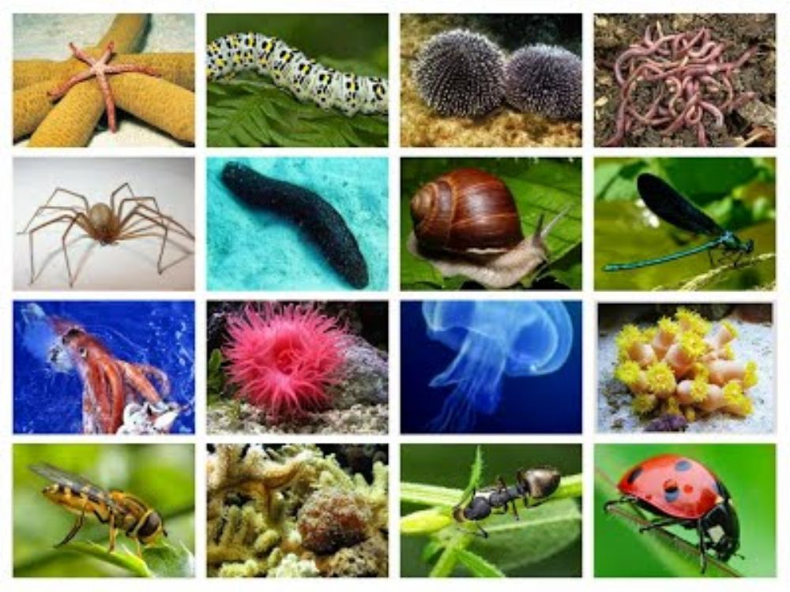

El reino Animalia es el más evolucionado y se divide en dos grandes grupos: vertebrados e invertebrados. Los animales son seres pluricelulares y eucariotas de alimentación heterótrofa, respiración aeróbica, reproducción sexual y capacidad de desplazamiento. Este reino es uno de los más biodiversos y está compuesto por mamíferos, peces, aves, reptiles, anfibios, insectos, moluscos y anélidos, entre otros
La mayoría de los animales no pueden absorber comida; la ingieren. Los animales han evolucionado de diversas formas para alimentarse. Los herbívoros comen plantas, los carnívoros comen otros animales; y los omnívoros se alimentan tanto de plantas como de animales. Los detritívoros comen material vegetal y animal en descomposición. Los comedores por filtración son animales acuáticos que cuelan minúsculos organismos que flotan en el agua. Los animales también forman relaciones simbióticas, en las que dos especies viven en estrecha asociación mutua. Por ejemplo un parásito es un tipo de simbionte que vive dentro o sobre otro organismo, el huésped. El parásito se alimenta del huésped y lo daña.
No importa si viven en el agua o en la tierra, todos los animales respiran; esto significa que pueden tomar oxígeno y despedir dióxido de carbono. Gracias a sus cuerpos muy simples y de delgadas paredes, algunos animales utilizan la difusión de estas sustancias a través de la piel. Sin embargo, la mayoría de los animales han evolucionado complejos tejidos y sistemas orgánicos para la respiración.
Muchos animales acuáticos pequeños, como algunos gusanos, utilizan solo la difusión para transportar oxígeno y moléculas de nutrientes a todas sus células, y recoger de ellas los productos de desecho. La difusión basta porque estos animales apenas tienen un espesor de unas cuantas células. Sin embargo, los animales más grandes poseen algún tipo de sistema circulatorio para desplazar sustancias por el interior de sus cuerpos.
Un producto de desecho primario de las células es el amoníaco, sustancia venenosa que contiene nitrógeno. La acumulación de amoniaco y otros productos de desecho podrían matar a un animal. La mayoría de los animales poseen un sistema excretor que bien elimina amoniaco o bien lo transforma en una sustancia menos tóxica que se elimina del cuerpo. Gracias a que eliminan los desechos metabólicos, los sistemas excretores ayudan a mantener la homeostasis. Los sistemas excretores varían, desde células que bombean agua fuera del cuerpo hasta órganos complejos como riñones.
La mayoría de los animales se reproducen sexualmente mediante la producción de gametos haploides. La reproducción sexual ayuda a crear y mantener la diversidad genética de una población. Por consiguiente, ayuda a mejorar la capacidad de una especie para evolucionar con los cambios del medio ambiente. Muchos invertebrados también pueden reproducirse asexualmente. La reproducción asexual da origen a descendiente genéticamente idénticos a los progenitores. Esta forma de reproducción permite que los animales aumenten rápidamente en cantidad.
Los vertebrados (Vertebrata) son un subfilo muy diverso de cordados que comprende a los animales con espina dorsal o columna vertebral, compuesta de vértebras. Incluye unas 72 327 especies actuales. Los vertebrados han logrado adaptarse a diferentes ambientes, incluidos los más difíciles e inhóspitos. Aunque proceden inicialmente del medio dulceacuícola, una gran diversidad de formas evolucionó en el mar y más tarde, en el medio terrestre. Los vertebrados tienen simetría bilateral y están provistos de un cráneo que protege el cerebro, y esqueleto cartilaginoso u óseo, que comprende una parte axial metamerizada (columna vertebral). Según los autores, se conocen entre 50 000 y casi 62 000 especies actuales.Los vertebrados típicos tienen el cuerpo dividido en tres regiones: cabeza, tronco y cola; en los mamíferos, el tronco está a su vez subdividido en tórax y abdomen. En las formas acuáticas, existen aletas en posición media, generalmente diferenciadas en aleta dorsal, caudal y anal); en los vertebrados con quijadas, del tronco sobresalen las extremidades pares. Presentan notocordio en la fase de embrión, que es sustituido por la columna vertebral en estado adulto; la cabeza está bien diferenciada, y en ella se agrupan y centralizan la mayoría de órganos sensoriales y nerviosos. La estructura esqueletaria de los vertebrados fosiliza con facilidad. lo cual ha sido fundamental para conocer su evolución.
Los invertebrados suelen tener estas características: Suelen ser animales de pequeño tamaño. Carecen de esqueleto interno articulado óseo o cartilaginoso (las esponjas y los equinodermos tienen un esqueleto interno de naturaleza calcárea o silícica, mientras que los artrópodos poseen un exoesqueleto). Muchos tienen conchas, caparazones o cubiertas de alguna sustancia dura. Probablemente es el grupo que, con los microorganismos, ha sido el peor inventariado, porque los invertebrados son a menudo pequeños y viven discretamente, en los mares, los sedimentos, los suelos, etc. Su número, la complejidad de su descripción y la subestimación de su potencial económico, científico y alimentario contribuyó durante mucho tiempo, desviando la investigación científica, y hubo que esperar a finales del siglo XVIII para que los científicos europeos repitieran el trabajo allí dónde Aristóteles y Plinio lo habían dejado
Un organismo pluricelular o multicelular es aquel que está constituido por dos o más células, en contraposición a los organismos unicelulares (protistas y bacterias, entre muchos otros), que reúnen todas sus funciones vitales en una única célula.

Una célula animal es el tipo de célula eucariota de la que están compuestos los tejidos animales.
La estructura de la célula se divide en tres partes